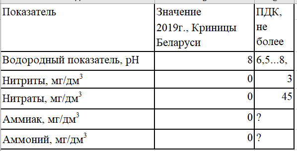
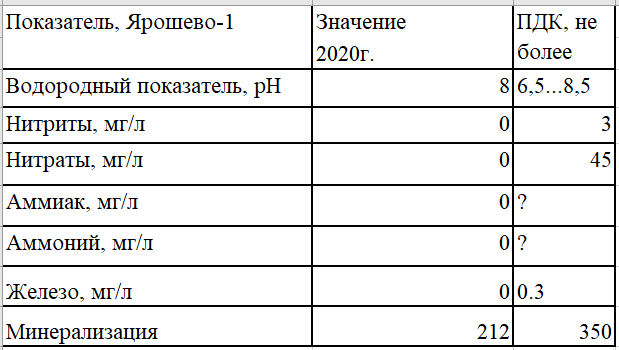
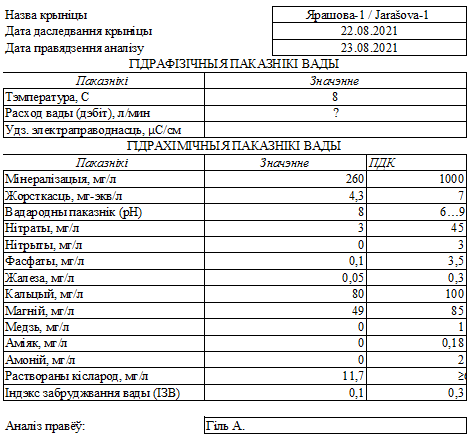

Ярошево-1
02.05.2018
Брестская область > Барановичский район > д. Кузевичи > Ярошево-1
{kind=link}
{kind=link}
Вода льется через углубление в кольце. Также на камне у кольца находится кружка. Около родника встречается довольно редкое явление в Барановичском районе - возле основного родника находится огромное множество маленьких ключей, т.е. берег реки водоточит. Родниковый ручей шириной около 34см впадает в р.Молчадку (официально - р. Голынка).
Дебит родника - 10 л/с.
Местные жители считают, что помогает при заболеваниях глаз
По состоянию на лето 2021 г. - путь к роднику затоплен из-за построения бобрами плотины, вследствии чего река Молчадка разлилась. В окрестных деревнях замечена нехватка воды, особенно в д. Голынка и часть д. Крутовцы, где расположен родниковый исток р. Молчадка. Без перехода Молчадки вброд подступиться к роднику со стороны д. Кузевичи и шоссе ст.Мордичи-Омневичи невозможно.
Анализ воды
Анализ воды от 04.2019

Анализ воды от 06.2020


Местоположение
Координаты: 53.28944, 25.82641